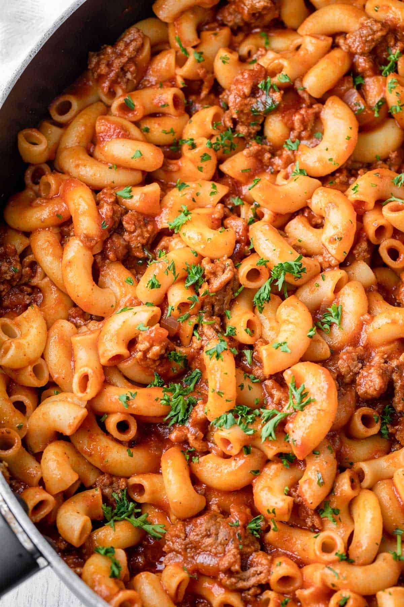

MACARONI
Home

About Macaroni
Macaroni is a simple and tasty pasta dish made by cooking macaroni with vegetables,
sauce, and sometimes meat or fish. It is soft, flavorful, and easy to prepare.
Ingredient for Macaroni
- Macaroni
- Vegetable oil
- Onion
- Garlic
- Tomatoes or tomatoe pasta
- Carrots
- Green peas
- Green pepper
- Chicken, fish or beef
- Salt
- Seasoning cubes
- Curry and thyme
Steps for preparing Macaroni
- Boil the macaroni and drain the water.
- Heat oil in a pot and fry onions and garlic.
- Add tomatoes or pasta and cook for a few minutes.
- Add your chicken, fish or beef and cook well.
- Add vegetables and stir.
- Put in the cooked macaroni and mix.
- Add salt, seasoning, curry, and thyme.
- Stir well, cook for a few minutes, and serve.